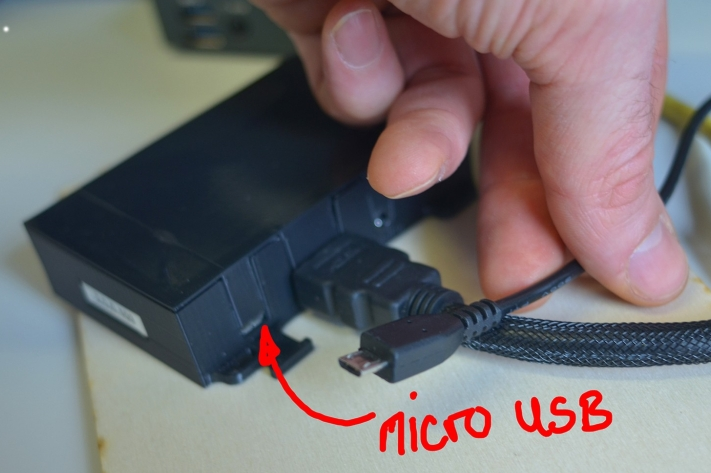

PocketVJ RTC
Content
PocketVJ RTC
»
First Steps
View page source
First Steps
¶
Connecting
¶
Thank you for buying a PocketVJ, you are fantastic !
Plugin an HDMI cable with a screen or projector connected.
Plugin the micro USB power cord.

Watch how it boots and after a moment you will see the standard testvideo playing:
The Control Panel
¶
Something else
¶